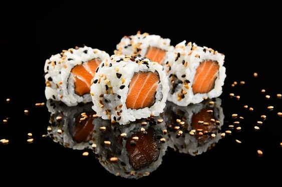

Dashi mantiene los principios de la comida japonesa ofreciendo una gran selección de sushi y especialidades fusión asiática y peruana, con menú amplio apto para veganos, vegetarianos y celiacos. Desde principios del año 2000 se ha mantenido la calidad premium que caracteriza la marca en cada una de sus creaciones.
Desde los inicios de Dashi a principios del año 2000, hemos mantenido un estándar de calidad premium en cada una de nuestras creaciones culinarias. Nos enorgullece ofrecer a nuestros clientes no solo una experiencia gastronómica deliciosa y única, sino también un compromiso constante con la excelencia y la autenticidad en cada plato que servimos. En Dashi, creemos en deleitar a nuestros comensales con sabores frescos, innovadores y respetuosos con la rica herencia de la cocina japonesa. ¡Te invitamos a explorar nuestro menú y descubrir la excelencia de Dashi en cada bocado!